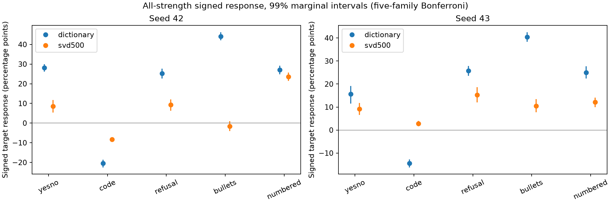

14 October 2026 · Completed development studies · Two reconstructed Gemma-3 4B adapters
Reportable comparative finding: a fixed SVD500 representation reduced prospective held-out reference-loss-change RMSE by 32.3% and 31.6% relative to the original sparse dictionary. Forecasts were locked before updates on fresh prompt rows, and the prespecified minimum improvement cleared in both seeds. Absolute accuracy remained below our target, and the separate steering study did not establish interpretable SVD control.
For each unseen batch of eight documents, predict how one full-gradient SGD step changes the model's mean completion loss on separate reference answers. Both representations retain the projected batch-gradient magnitude. No scale was fitted to the outcomes. The primary step was fixed at 0.003 before these results.
| Training seed | SVD nRMSE | Dictionary nRMSE | RMSE reduction | Full-gradient reference | SVD MAE, nats/token |
|---|---|---|---|---|---|
| 42 | 0.462 | 0.683 | 32.3% | 0.226 | 0.0144 |
| 43 | 0.466 | 0.682 | 31.6% | 0.264 | 0.0183 |
nRMSE is RMSE divided by the error of predicting no change. Lower is better; zero prediction scores 1. The paired dictionary-minus-SVD advantages were 0.220 and 0.216. Their 99.375% marginal Bonferroni intervals were [0.188, 0.254] and [0.176, 0.254], above the prespecified 0.10 minimum. These approximate bootstrap bounds belong to the eight-quantity primary comparison family.
The full success criterion failed. The SVD MAE target was 0.01 nats/token. Its simultaneous nRMSE upper bounds, 0.513 and 0.524, also exceeded the 0.5 target. SVD predicted about 56% and 53% of the actual mean loss changes. This is a comparative improvement with substantial remaining underprediction. Full-gradient predictions were more accurate overall, although their largest errors at this step remained large.

Both seeds used 32 batches, 16 descriptive calibration probes and 64 evaluation probes. The 336 fresh rows were selected and deduplicated before scoring. There were 64 actual updates per seed across both fixed rates, all forecasts preceded every update, and every adapter restore passed. Both complete integrity audits passed. All methods, rates, tails, negative cases and 1,024 fixed examples are in the complete prospective forecast report.
SVD used all 500 coefficients on these batches; sparse coding averaged 23.8 and 24.7. This comparison is not matched for sparsity or compute. The previously named components accounted for only 1.3% and 4.2% of SVD's summed absolute component contributions on evaluation pairs, on average. That descriptive share is not causal attribution or validated semantics.
Using five published behavior families, all five fixed strengths and both signs, SVD gave weaker aggregate signed steering than the dictionary. The study retained 29,080 generated responses and 320 held-out descriptor gradients.
| Seed | SVD signed response, pp | Atoms, pp | SVD minus atoms, pp, 95% interval |
|---|---|---|---|
| 42 | 6.32 | 20.82 | -14.50 [-15.46, -13.54] |
| 43 | 9.98 | 18.46 | -8.48 [-9.74, -7.32] |
Signed response is half the positive-minus-negative target-rate difference, averaged over all strengths and equally across the five families. It is not unrestricted answer quality. No family passed the joint quality criteria across the full strength grid in either method. SVD's missing-input clarification component passed the narrow gradient-description checks in both seeds but failed selective intervention and quality checks. We cannot claim clean interpretable SVD components, or infer clean interpretability from atoms' stronger steering.

Complete SVD steering and description report. Both source and output audits passed. No sign flips, best-strength selection or promotion of secondary families.
The completed comparison of normalized-row and magnitude-preserving dictionary learning did not solve effect-size underprediction. At step 0.003, normalized versus magnitude-fit nRMSE was 0.728 versus 0.751 in seed42 and 0.757 versus 0.761 in seed43. All missed the 0.5 accuracy target. This used a different frozen set of natural prompts; do not compare its errors directly to the new SVD study as if they shared targets. Complete magnitude-learning report.
On two reconstructed Gemma-3 4B adapters, replacing sparse dictionary coding with SVD improved prospective reference-loss effect-size forecasts, while selected SVD components gave weaker aggregate steering. Better numerical fidelity has not yielded a small, semantically validated explanation of batch updates.
This is development evidence with reused adapters and fitting data. The original paper's rank8 checkpoint was unavailable, so this is an architecture reconstruction. Alpaca references are model-generated and not asserted correct. Prompt/source/lexical deduplication does not ensure complete semantic independence. Numerical reference loss is not a forecast of unrestricted generated behavior. The steering execution split complete families across GPUs; method pairs share hardware, but seed42 baseline-relative quality comparisons include an A100/H100 difference.
All scientific phases are complete. No further experiments are queued. Original failures, source archives, pre-reading plans, locked forecasts, fixed examples and all results are retained. The final prospective study had one training-only precision-interface preflight failure, preserved and repaired before any scientific forecasts or updates.